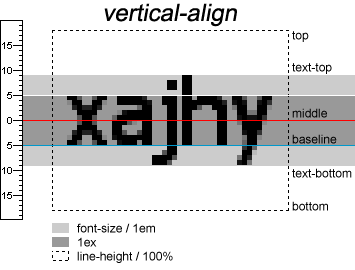

- Margin合并
- .相邻元素同时存在某个方向上的margin时，会触发margin合并的情况，如兄弟元素一个设置了margin-bottom，一个设置了margin-top；合并结果取两者之中的大者
- .实际体现：文章中，上下相邻段落的段间距是一样的
- .只有标准流存在；浮动/固定/绝对定位的元素不存在塌陷
- [] 兄弟关系
- .兄元素margin-bottom
- .弟元素margin-top
- Margin塌陷
- .相邻元素同时存在某个方向上的margin时，会触发margin塌陷，如父子元素都设置margin-top；塌陷结果取两者之中的
大者
- .只有标准流存在；浮动/固定/绝对定位的元素不存在塌陷
- [] 父子塌陷
- .父元素margin-top
- .子元素margin-top
- 解决方案
- .破除相邻的关系即可
- .创建BFC - Block Formatting Context
- .[独立][渲染]的一块区域；不同的BFC互不干扰：即里面的元素不会影响外面的元素；创建BFC可以解决高度坍塌和清除浮动；
- 具体措施
- .为父元素增加：border-top/padding-top/overfollow：hidden
- .为子元素添加：浮动、定位
- [] 塌陷
- .使用Snipaste测量：父级顶部实际margin不是10px，而是20px，同时子级margin塌陷为0
- .点击不同选项，查看塌陷解决方案
-
-
- [CSS]尺寸、背景颜色略
-
.fa {
margin-top: 10px;
}
.son {
margin-top: 20px;
}
- 垂直方向对齐vertical-align
- .适用于 inline 和 inline-block
- .一个容器中，有多个子元素要分别设置，如统一垂直居中middle
- .对中文影响不大
- .相邻行文字的基线与基线之间的距离就是行高 line-height
- .行间距 = 行高 - 字体大小
-
| 类别 |
说明 |
| baseline |
默认。元素放置在父元素的基线上 |
| top |
把元素的顶端与行中最高元素的顶端对齐 |
| text-top |
把元素的顶端与父元素字体的顶端对齐 |
| middle |
把此元素放置在父元素的中部 |
| text-bottom |
把元素的底端与父元素字体的底端对齐 |
| bottom |
把元素的顶端与行中最低的元素的顶端对齐 |
- 
- [] 对齐
-
line-height: 64px;
top
text-top
middle
baseline
text-bottom
bottom
- [HTML]
-
<div class="ref-box">
line-height: 64px;
<span style="vertical-align: top">top</span>
<span style="vertical-align: text-top">text-top</span>
<span style="vertical-align: middle">middle</span>
<span style="vertical-align: baseline">baseline</span>
<span style="vertical-align: text-bottom">text-bottom</span>
<span style="vertical-align: bottom">bottom</span>
</div>
- [辅助CSS]
-
.ref-box {
font-size: 32px;
line-height: 64px;
height: 100px;
background: #000;
color: #fff;
}
.ref-box span {
display: inline-block;
border: 1px solid #fff;
font-size: 16px;
line-height: 16px;
height: 20px;
}
- 滚动html
- .设置字体1rem=10px，便于运算
- .指定平滑滚动
- .指定滚动目标到顶部距离，特别适合锚点跳转，可以避免锚点目标被顶部的导航遮盖
-
平滑滚动
html {
font-size: 62.5%;
scroll-behavior: smooth;
scroll-padding-top: 6rem;
}
- 定制滚动条
- .通常指定<body>，也可以应用到其它容器元素
-
定制滚动条
body::-webkit-scrollbar {
width: 10px;
}
body::-webkit-scrollbar-track {
background-color: #fff;
border-radius: 5px;
}
body::-webkit-scrollbar-thumb {
background-color: #444;
border-radius: 5px;
}
body::-webkit-scrollbar-thumb:hover {
background-color: var(--blue-light-color);
}
-   vs space
- . ：non-breaking space，不换行的空格，多用于组织英文的关键字，避免被换行打散
- .©-©
- .@-@
- 用户选择user-select:none;
- .禁止用户选择
- 事件触发pointer-events: none;
- .阻止元素触发事件，如可以只让父元素响应，所有子元素禁止，可以简化事件处理
- .可以实现节流功能
- 溢出隐藏Overflow：hidden;
- .消除塌陷
- .清除浮动
- .消除grid布局时为grid-item指定padding时引起的尺寸扩展
- .消除flex布局时，子项分配的空间被实际内容撑开，如<img>，详情见 text-入党誓词一节
- 继承inherit
- .继承父级属性，避免重复定义样式
- .适用：input、select、button、a
-
a, input {
font: inherit;
color: inherit;
}
- 自定义鼠标cursor
- .支持静态图片
- .图片大小不能太大，一般是32*32
- .使用的容器如<body>要有高度，否则显示不出来
-
body {
cursor: url(./favicon.ico), auto;
min-height: 100vh;
}
- 移动端热区响应背景
- 更多细节，请访问CAN I USE
-
-webkit-tap-highlight-color: transparent;
- 取消/禁止页面翻译
- .移除<html lang="en">的lang属性
- -inline
- 在水平方向指定属性，如左右填充padding、左右margin、左右border
- 简化代码
-
传统代码
margin-left: 1rem;
margin-right: 1rem;
简化代码
margin-inline: 1rem;
- max-content
- 子项最大和容器保持一致
-
.item {
position: absolute;
inset: 0;
margin: auto;
width: max-content;
height: max-content;
}